欧游札记之徜徉法兰西(DAY5.2 石头小镇-索村-阿维尼翁)
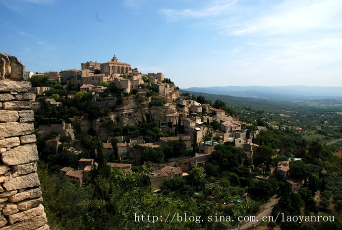
DAY5.2 石头小镇-索村-阿维尼翁
远观石头城的时候发现它大约是由于建立在一座石山顶上且房屋建材大部分为石灰片岩而得名，其灰白色外墙的建筑依山势层层而起，当时还颇为疑惑此城到底是自下而上还是自上而下形成的，等到了山顶的小城中心一看便恍然大悟，原来这里所有的建筑都以山顶的戈尔德城堡为中心而向山下延伸，数条通往山下民居的蜿蜒小路也均从戈尔德城堡的中心广场四散而下。司机建议我们大家在此简单对付一餐午餐以便腾出时间来参观，由于我们之前常常入乡随俗地和大多法国人一样中午啃面包就着咖啡或矿泉水搞定午饭，所以也就非常自然地找了一家貌似出品还不错的法式三明治小店解决温饱问题，该店三明治一口下去感觉上下层的面皮软硬适中，夹心的蔬菜和肉类鲜美可口，真心觉得是我们在法国吃到的最可口的三明治了（没有之一！）。还没来得及好好回味食物的味道，我们便要匆匆地赶往石头城的各处游荡了，颇费了一些时间把广场周边的小巷基本走了一遭，当地人因地制宜地用石灰岩片岩及灰浆堆砌的灰白屋墙历经风雨沧桑而斑驳剥落，墙头披洒而下的大片大片的绿萝藤蔓夹杂着各色小花肆意生长蔓延，街边小巷中随处可见阳光沐浴下的小咖啡馆里散坐着惬意品尝咖啡晒太阳的本地人和游客，这一切都使得石头小城于沧桑古朴之余又颇添了几分生活的气息。
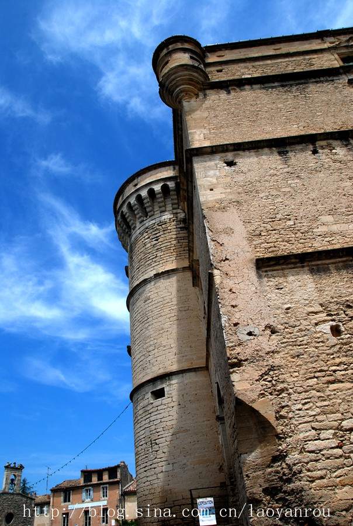
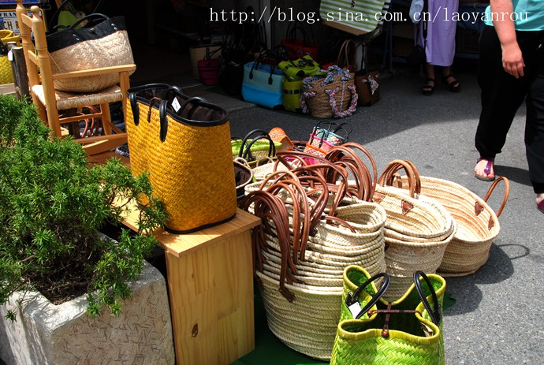
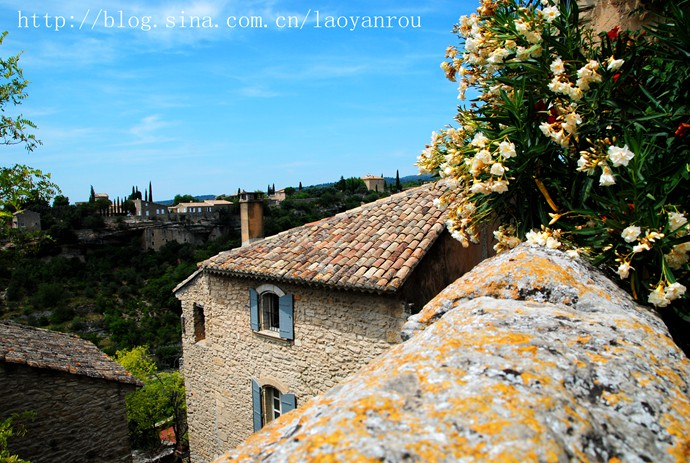
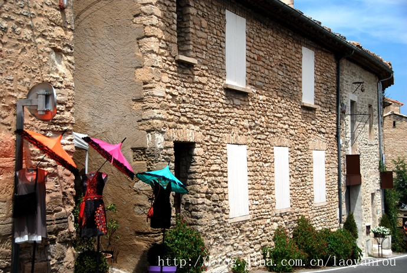
薰衣草经典小镇一日游的最后一站是索村的薰衣草田，听司机导游介绍说今年的薰衣草收割得比较早，所以恐怕看不到往年紫花漫山遍野的景象了，但所谓失望越大惊喜也越大，本不抱着什么期望的我们下车来到大片的薰衣草田前的时候确实还是被小小地震撼了一下，连绵好几片的薰衣草田在南法浓烈的阳光照耀下显得格外大气而辽阔，站在很远的地方都能闻到夹杂清新泥土气息的浓郁花香伴着旭风阵阵袭来，无数条紫色的田垅从眼前一直弯弯曲曲的向远方的地平线蜿蜒前行，非常具有印象主义派油画的强烈画面感。游人们纷纷如同被花蜜所吸引的蜜蜂一样穿梭流连在薰衣草花的田垅间，唯恐时光飞逝，纷纷以各种姿态留影为念。甚至有些PLMM甘愿顶着烈日也要以“相不惊人死不休”的气概将同团的游客晾一旁边干等也不肯放弃留影的分分秒秒，姑且抛开所谓国人素质论之类不说，单就国人对薰衣草的情结究竟从何而起却也值得探讨一番，我估计还得归功于在国内曾风靡一时韩日港台言情剧的带动，使得薰衣草冠上了浪漫爱情的象征，让无数靓女俊男们为其趋之若鹜，捎带就把各年龄阶层的国人给忽悠进去了。从参观索村的均是清一色的国人旅游团来看，我感觉其实在法国人眼中薰衣草只不过是一种特殊的农产品而已，多大规模的薰衣草田在他们看来或许跟我们看玉米地一样并不见得有多浪漫，可见国人的跟风传统对于炒作一种物品并催生了包括旅游业、种植业在内的诸多行当的作用有多巨大啊！颇为讽刺的是，类似薰衣草的故事在国内似乎比比皆是甚至还有愈演愈烈的趋势，比如先前的兰花，后来的普洱茶，再后来的紫砂壶及红木、翡翠等，直到近年的股市，无一不印证了这一点。
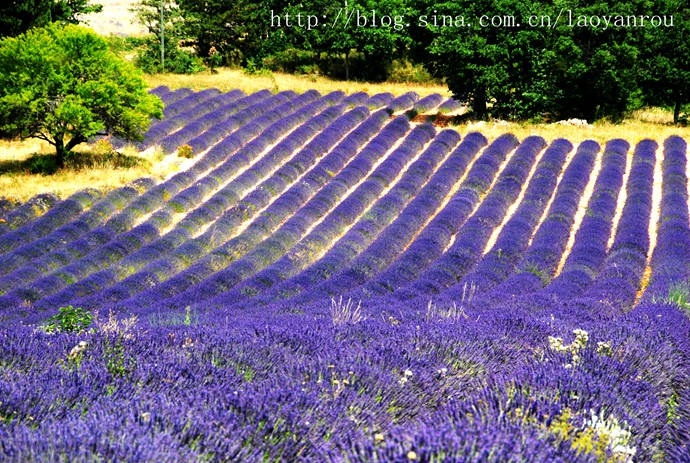
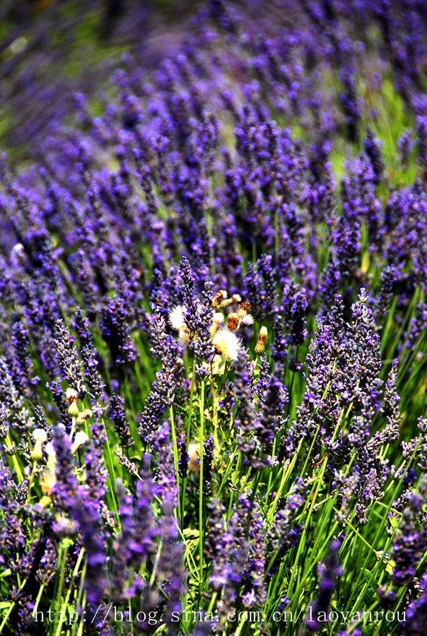
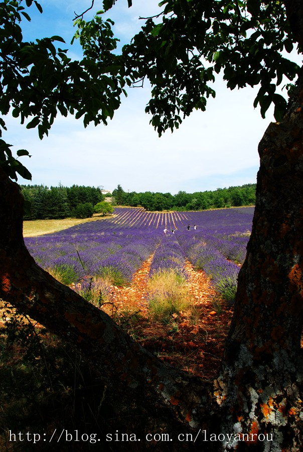
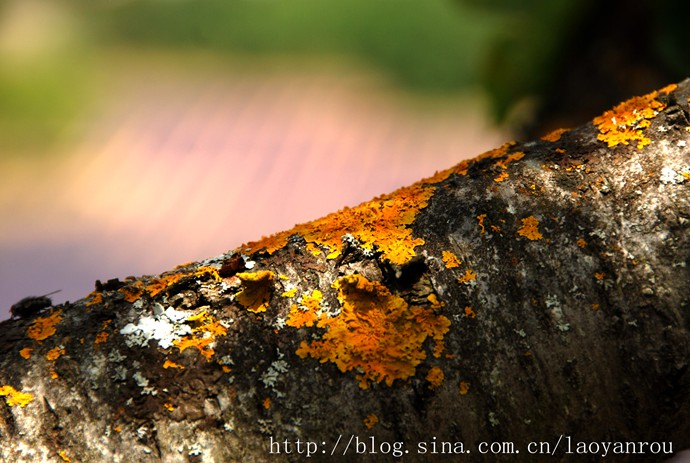
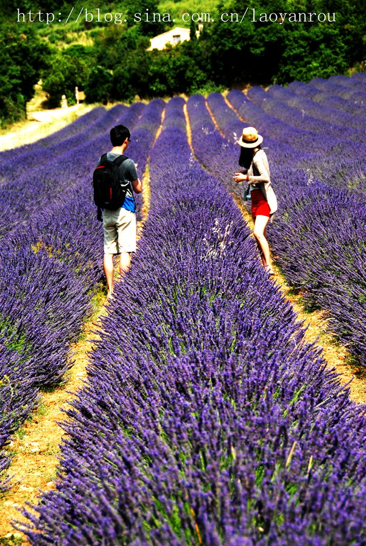
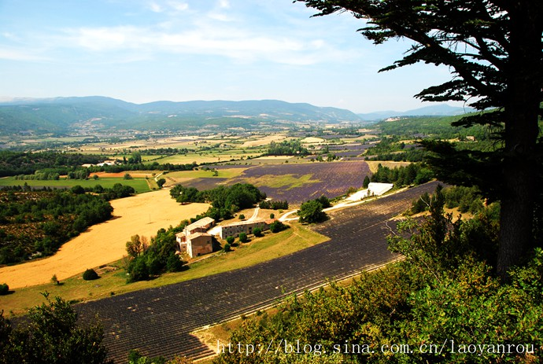
不管怎么说，一天的薰衣草之旅下来我们至少还是收获了大自然馈赠的美景和花香，怀着洋溢着紫色的心情和依依不舍我们告别了索村踏上了返回阿维尼翁的回程，由于时间尚早团友们一致要求司机将我们载到阿维尼翁老城逛一逛，到了老火车站各自缴纳了现金团费后便告别了这个陪伴我们奔波了一天的黝黑的天津汉子。从老火车站一出来正对的就是阿维尼翁老城的城门，穿过城门一路向前时感觉大街上的气氛异常热烈，街上两边的建筑和围栏上到处张贴了颜色绚丽的各种艺术表演的宣传单，不仅街边街头艺人的吹拉弹唱随处可见，而且时不时还有穿着夸张怪异的如蓝色母鸡之类的行为艺术者在身边穿梭而过，吸引了不少路人的眼球，甚至还有两位印度老伯看起来颇假的"悬浮"表演也煞有其事般占据了一席之地。后来了解到，由于明天就是阿维尼翁艺术节，所以法国各路艺术家包括街头艺术家纷纷汇聚一堂正准备大显身手，当然少不了大张旗鼓的宣传和造势了。我们一早习惯了法国人下午4，5点店铺纷纷关门街上冷冷清清的情形，看到如此人声鼎沸熙熙攘攘，嘈杂而垃圾满地的大街顿时措手不及仿佛回到了国内某个大城市的夜市步行街上了，可能对于法国人来说艺术似乎没有高低贵贱之分，不管街头卖艺还是剧场表演似乎都能称为艺术，但对于我们来说仿佛只有高雅的阳春白雪才配叫艺术，所以才会不理解为什么教皇宫广场上一个小丑打扮的表演简单杂技并插科打诨的街头艺术者能赢得众多法国观众的喝彩和共鸣，或许这就是两国文化差异之处吧。
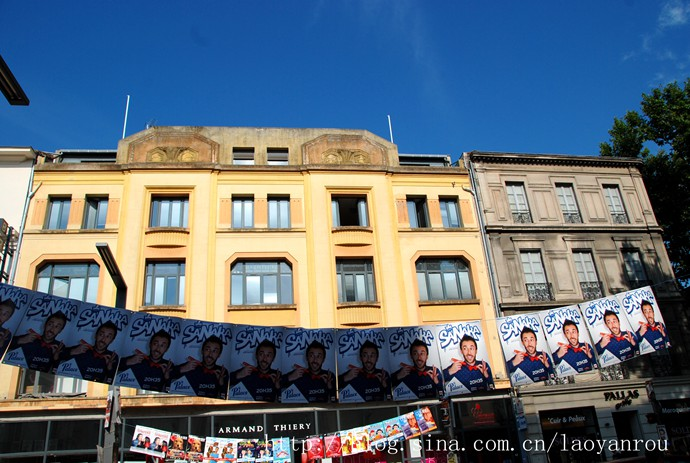
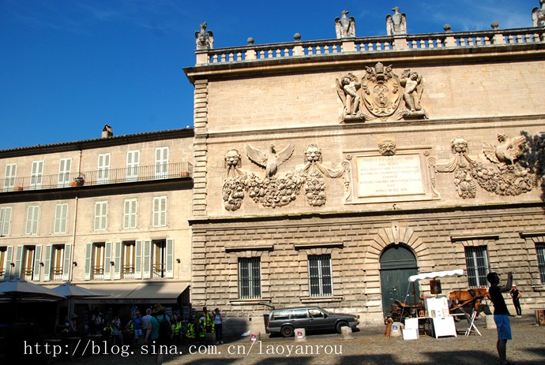
我们在大街上逛了好一会后便在路边找了一家餐厅吃了一顿颇为不菲的法式晚餐，远观了一下沐浴在夕阳下的金黄色巍峨伫立的教皇宫，穿过依旧热闹的街道和人群回到老火车站，搭上一辆似乎极难等待的穿梭火车回到阿维尼翁TGV火车站，带着一天的疲惫枕着薰衣草花香沉沉地进入了紫色的梦乡。